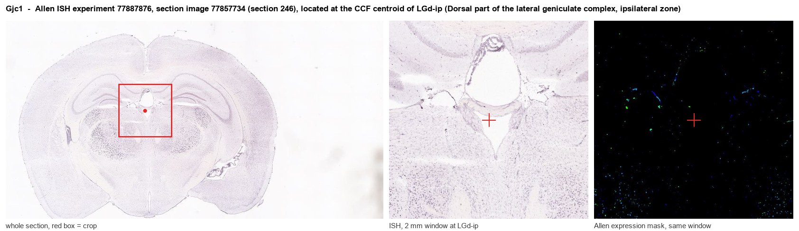
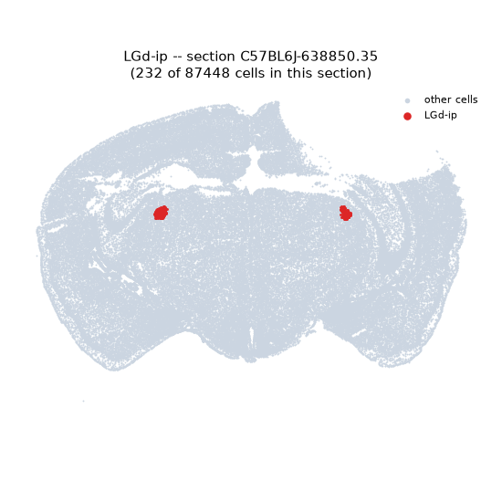
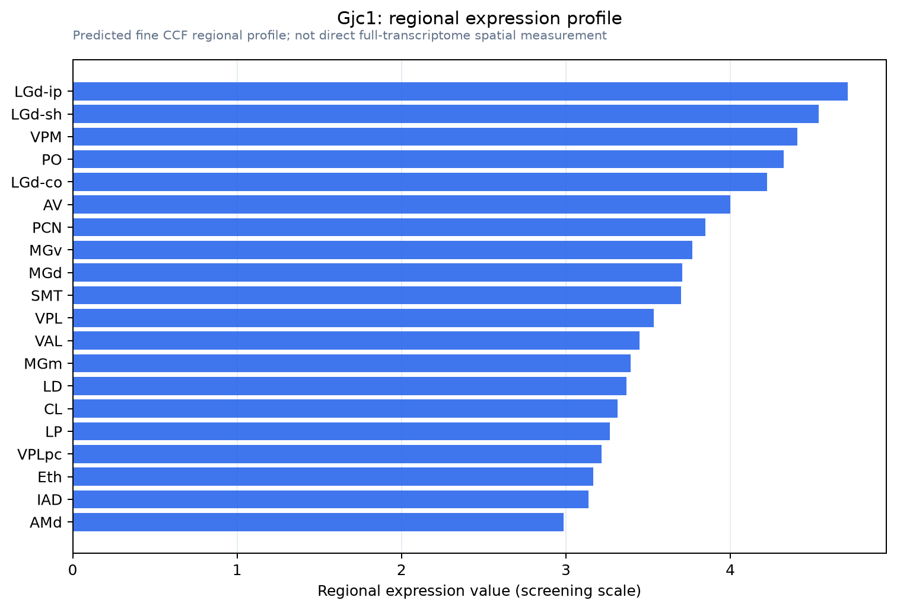

Gjc1
Gap junction gamma-1 protein (Connexin-45) (Cx45) (Gap junction alpha-7 protein)
Spatial tier: REGION_BIASED · Class: ION_CHANNEL · Top region: LGd-ip (Dorsal part of the lateral geniculate complex, ipsilateral zone) · Positive regions: 32/554
Function in LGd-ip: evidence, prediction, innovation
- Gene function
- Gjc1 encodes connexin 45 (Cx45), a gap junction protein that oligomerises into hexameric connexons; docked connexons from adjacent cells form channels passing ions and small metabolites. Cx45 channels have low unitary conductance and strong voltage gating, and in neurons they form electrical synapses that synchronise firing. The same gene supports cardiac conduction, and human loss-of-function variants cause familial atrial fibrillation.
- Region function
- The dorsal lateral geniculate nucleus relays retinal input to primary visual cortex; its ipsilateral zone carries the uncrossed retinal projection and is the substrate of eye-specific segregation and binocular processing.
- Published in this region
- expression only Maxeiner et al. 2003 used a Cx45-LacZ reporter mouse from E19.5 to adulthood and found that, after broad early expression, adult Cx45 becomes restricted to thalamus, hippocampal CA3 and cerebellum, with the thalamic reporter labelling neurons rather than astrocytes or mature oligodendrocytes. A dorsal lateral geniculate signal is therefore genuinely neuronal, but no study has examined Cx45 in LGd or its ipsilateral zone specifically.
- Predicted function
- Prediction: Cx45 most likely forms electrical synapses among dorsal lateral geniculate relay neurons and local interneurons, supporting correlated burst firing during the perinatal window when retinogeniculate axons refine and eye-specific zones form. Conditional thalamic Gjc1 deletion should reduce coupling and spike synchrony, degrade eye-specific segregation of the ipsilateral zone, and blunt burst-mode relay, with acuity preserved but binocular matching impaired.
- Innovation
- ★★★★☆ 4/5 Adult Cx45 is thalamus-enriched yet nobody has tested electrical coupling or eye-specific refinement in the dorsal lateral geniculate.
- Tools
- Cx45-LacZ reporter and floxed Gjc1 conditional knockout mice (Willecke lab); thalamic Cre drivers including Olig3-Cre, Gbx2-CreER and Rorb-Cre; pan-gap-junction blockers carbenoxolone and mefloquine (non-selective); anti-Cx45 antibodies.
- References
Direct evidence located at the region

Allen ISH experiment 77887876, section image 77857734 (section 246): the section that contains the CCF centroid of Dorsal part of the lateral geniculate complex, ipsilateral zone according to the Allen image-to-atlas alignment (reference_to_image), with a 2 mm window around that point. Left: whole section, red box = window. Middle: ISH signal. Right: Allen's expression-mask view of the same window. open this image in the Allen viewer
Direct spatial evidence

Regional expression figure

Predicted WMB × fine-CCF profile; not direct full-transcriptome spatial measurement.
Spatial profile
Evidence and specificity
- Evidence status
- PREDICTED_FINE
- Direct sources
- None; predicted localization only
- Exclusive threshold
- 12 positive regions out of 554
- Spatial specificity
- 0.350
- Top-region fraction
- 0.042
- Filter status
- PASS
Interpretation limits
- Cell-type-to-region projection is imputed expression, not direct spatial measurement.
- Adult reference atlases do not establish stability across age, sex, strain, state, or disease.
- Transcript abundance does not guarantee protein abundance or genetic-tool performance.